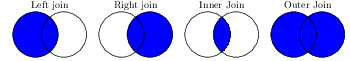
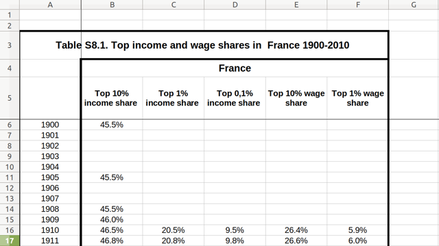

6.Data Wrangling
- Filter rows and columns in data frames
- Compute new columns and summary statistics for data frames
- Reshape and merge data frames
This chapter uses the readxl package for reading Excel files and various parts of the tidyverse including ggplot2, dplyr, and tidyr (which are installed automatically when you install tidyverse). In Python we rely mostly on the pandas package, but we also use scipy package for statistics and the xlrd for reading Excel files. You can install these packages with the code below if needed (see Section 1.4 for more details):
!pip3 install pandas scipy seaborn "xlrd>1.2" #install.packages("tidyverse") import pandas as pdimport seaborn as snsimport scipy.statsimport re
library(tidyverse)library(readxl)
6.1.Filtering, Selecting, and Renaming
Selecting and renaming columns A first clean up step we often want to do is removing unnecessary columns and renaming columns with unclear or overly long names. In particular, it is often convenient to rename columns that contain spaces or non-standard characters, so it is easier to refer to them later.
Selecting rows As a next step, we can decide to filter certain rows. For example, we might want to use only a subset of the data, or we might want to remove certain rows because they are incomplete or incorrect.
As an example, FiveThirtyEight published a quiz about American public opinion about guns,
and were nice enough to also publish the underlying data[1].
Example 6.1 gives an example of loading and cleaning this dataset, starting with the function read_csv (included in both tidyverse and pandas) to load the data directly from the Internet.
This dataset contains one poll result per row, with a Question column indicating which question was asked,
and the columns listing how many Americans (adults or registered voters) were in favor of that measure, in total and for Republicans and Democrats.
Next, the columns Republican and Democratic Support are renamed to shorten the names and remove the space.
Then, the URL column is dropped using the tidyverse function select in R or the pandas function drop in Python.
Notice that the result of these operations is assigned to the same object d.
This means that the original d is overwritten.
select is quite versatile.
You can specify multiple columns using select(d, column1, column2)
or by specifying a range of columns: select(d, column1:column3).
Both commands keep only the specified columns.
As in the example, you can also specify a negative selection with the minus sign:
select(d, -column1) drops column1, keeping all other columns.
Finally, you can rename columns in the select command as well:
select(d, column1=col1, column2) renames col to column1,
keeps that column and column2, and drops all other columns.
We then filter the dataset to list only the polls on whether teachers should be armed
(you can understand this is close to our heart).
This is done by comparing the value of the Question column to the value 'arm-teachers'.
This comparison is done with a double equal sign (==).
In both Python and R, a single equals sign is used for assignment,
and a double equal sign is used for comparison.
A final thing to notice is that while in R we used the dplyr function (filter) to filter out rows,
in Python we index the data frame using square brackets on the pandas DataFrame attribute loc(ation): d.loc[].
Note that we chose to assign the result of this filtering to d2,
so after this operation we have the original full dataset d as well as the subset d2 at our disposal.
In general, it is your choice whether you overwrite the data by assigning to the same object,
or create a copy by assigning to a new name[2].
If you will later need to work with a different subset, it is smart to keep the original so you can subset it again later.
On the other hand, if all your analyses will be on the subset, you might as well overwrite the original.
We can always re-download it from the internet (or reload it from our harddisk) if it turns out we needed the original anyway.
Example 6.1.
Filtering
url="https://cssbook.net/d/guns-polls.csv"d=pd.read_csv(url)d = d.rename(columns={"Republican Support": "rep","Democratic Support": "dem"})d = d.drop(columns="URL")# alternatively, we can write:# d.drop(columns="URL", inplace=True)d2 = d.loc[d.Question == "arm-teachers"]d2
url="https://cssbook.net/d/guns-polls.csv"d = read_csv(url)d = rename(d, rep=`Republican Support`,dem=`Democratic Support`)d = select(d, -URL)d2 = filter(d, Question == "arm-teachers")d2
| Question | Start | End | Pollster | Population | Support | rep | dem |
|---|---|---|---|---|---|---|---|
| <chr> | <chr> | <chr> | <chr> | <chr> | <dbl> | <dbl> | <dbl> |
| arm-teachers | 2/23/18 | 2/25/18 | YouGov/Huffpost | Registered Voters | 41 | 69 | 20 |
| arm-teachers | 2/20/18 | 2/23/18 | CBS News | Adults | 44 | 68 | 20 |
| arm-teachers | 2/27/18 | 2/28/18 | Rasmussen | Adults | 43 | 71 | 24 |
| arm-teachers | 2/27/18 | 2/28/18 | NPR/Ipsos | Adults | 41 | 68 | 18 |
| arm-teachers | 3/3/18 | 3/5/18 | Quinnipiac | Registered Voters | 40 | 77 | 10 |
| arm-teachers | 2/26/18 | 2/28/18 | SurveyMonkey | Registered Voters | 43 | 80 | 11 |
6.2.Calculating Values
Very often, we need to calculate values for new columns or change the content of existing columns. For example, we might wish to calculate the difference between two columns, or we may need to clean a column by correcting clerical errors or converting between data types.
In these steps, the general pattern is that a column is assigned a new value based on
a calculation that generally involves other columns.
In both R and Python, there are two general ways to accomplish this.
First, you can simply assign to an existing or new column,
using the column selection notation discussed in Section 3.1:
df["column"] = ... in Python, or df$column = ... in R.
Both Python and R also offer a function that allows multiple columns to be changed,
returning a new copy of the data frame rather than changing the original data frame.
In R, this is done using the tidyverse function mutate, which is the recommended way to compute values.
The Python equivalent, pandas function assign, is used more rarely as it does not offer many advantages over direct assignment.
In either case, you can use arithmetic: e.g. rep - dem to compute the difference between these columns.
This works directly in R mutate,
but in Python or in R direct assignment you also need to specify the name of the data frame.
In Python, this would be d["rep"] - d["dem"][3], while in R this is d$rep - d$dem.
In many cases, however, you want to use various functions to perform tasks like cleaning and data conversion
(see Section 3.3 for a detailed explanation of built-in and custom functions).
For example, to convert a column to numeric you would use the base R function as.numeric in R or the pandas function to_numeric in Python.
Both functions take a column as argument and convert it to a numeric column.
Almost all R functions work on whole columns like that.
In Python, however, many functions work on individual values rather than columns.
To apply a function on each element of a column col, you can use df.col.apply(my_function)
(where df and col are the names of your data frame and column).
In contast, Pandas columns have multiple useful methods that – because they are methods
of that column – apply to the whole column[4].
For example, the method df.col.fillna replaces
missing values in the column col, and df.col.str.replace conducts a find and replace.
Unlike functions that expect individual values rather than columns as an input, there is no need to explicitly apply such a method.
As always, you can use tab completion (pressing the TAB key after writing df.col.) to get a menu that includes all available methods.
Example 6.2.
Mutate
# version of the guns polls with some errorsurl="https://cssbook.net/d/guns-polls-dirty.csv"d2=pd.read_csv(url)# Option 1: clean with direct assignment# Note that when creating a new column,# you have to use df["col"] rather than df.cold2["rep2"] = d2.rep.str.replace("[^0-9\\.]", "")d2["rep2"] = pd.to_numeric(d2.rep2)d2["Support2"]=d2.Support.fillna(d.Support.mean())# Alternatively, clean with .assign# Note the need to use an anonymous function# (lambda) to chain calculationscleaned = d2.assign(rep2 = d2.rep.str.replace("[^0-9\\.]", ""),rep3 = lambda d2: pd.to_numeric(d2.rep2),Support2=d2.Support.fillna(d2.Support.mean()))# Finally, you can create your own functiondef clean_num(x):x = re.sub("[^0-9\\.]", "", x)return int(x)cleaned["rep3"] = cleaned.rep.apply(clean_num)cleaned.head()
# version of the guns polls with some errorsurl="https://cssbook.net/d/guns-polls-dirty.csv"d2 = read_csv(url)# Option 1: clean with direct assignment.# Note the need to specify d2$ everywhered2$rep2=str_replace_all(d2$rep, "[^0-9\\.]", "")d2$rep2 = as.numeric(d2$rep2)d2$Support2 = replace_na(d2$Support,mean(d2$Support, na.rm=T))# Alternative, clean with mutate# No need to specify d2$,# and we can assign to a new or existing objectcleaned = mutate(d2,rep2 = str_replace_all(rep, "[^0-9\\.]", ""),rep2 = as.numeric(rep2),Support2 = replace_na(Support,mean(Support, na.rm=TRUE)))# Finally, you can create your own functionclean_num = function(x) {x = str_replace_all(x, "[^0-9\\.]", "")as.numeric(x)}cleaned = mutate(cleaned, rep3 = clean_num(rep))head(cleaned)
| Question | Start | End | Pollster | Population | Support | rep | dem | rep2 | Support2 | rep3 |
|---|---|---|---|---|---|---|---|---|---|---|
| <chr> | <chr> | <chr> | <chr> | <chr> | <dbl> | <chr> | <dbl> | <dbl> | <dbl> | <dbl> |
| arm-teachers | 2/23/18 | 2/25/18 | YouGov/Huffpost | Registered Voters | 41 | 69 | 20 | 69 | 41.0 | 69 |
| arm-teachers | 2/20/18 | 2/23/18 | CBS News | Adults | NA | 68 | 20 | 68 | 41.6 | 68 |
| arm-teachers | 2/27/18 | 2/28/18 | Rasmussen | Adults | 43 | 71d | 24 | 71 | 43.0 | 71 |
| arm-teachers | 2/27/18 | 2/28/18 | NPR/Ipsos | Adults | 41 | 68 | 18 | 68 | 41.0 | 68 |
| arm-teachers | 3/3/18 | 3/5/18 | Quinnipiac | Registered Voters | 40 | 77 | 10 | 77 | 40.0 | 77 |
| arm-teachers | 2/26/18 | 2/28/18 | SurveyMonkey | Registered Voters | 43 | 80 | 11 | 80 | 43.0 | 80 |
To illustrate some of the many possibilities, Example 6.2 has code for cleaning a version of the gun polls in which we intentionally introduced two problems: we added some typos to the rep column and introduced a missing value in the Support column. To clean this, we perform three steps: First, we remove all non-numeric characters using a regular expression (see Section 9.2 for more information on text handling and regular expressions). Next, we need to explicitly convert the resulting column into a numeric column so we can later use it in calculations. Finally, we replace the missing value by the column mean (of course, it is doubtful that that is the best strategy for imputing missing values here, we do it mainly to show how one can deal with missing values technically. You will find some more discussion about missing values in Section 7.1).
The cleaning process is actually performed twice: lines 5-10 use direct assignment,
while lines 12-19 use the mutate/assign function.
Finally, lines 21-27 show how you can define and apply a custom function to combine the first two cleaning steps.
This can be quite useful if you use the same cleaning steps in multiple places,
since it reduces the repetition of code and hence the possibility of introducing bugs or inconsistencies.
Note that all these versions work fine and produce the same result.
In the end, it is up to the researcher to determine which feels most natural given the circumstances.
As noted above, in R we would generally prefer mutate over direct assignment,
mostly because it fits nicely into the tidyverse workflow and you do not need to repeat the data frame name.
In Python, we would generally prefer the direct assignment, unless a copy of the data with the changes made is convenient,
in which case assign can be more useful.
6.3.Grouping and Aggregating
The functions we used to change the data above operated on individual rows. Sometimes, however, we wish to compute summary statistics of groups of rows. This essentially shifts the unit of analysis to a higher level of abstraction. For example, we could compute per-school statistics from a data file containing information per student; or we could compute the average number of mentions of a politician per day from data file containing information per articles (each date might have multiple articles and each article multiple mentions to politicians!).
In data analysis, this is called aggregation. In both Python and R, it consists of two steps: First, you define which rows are grouped together to form a new unit by specifying which column identifies these groups. In the previous examples, this would be the school name or the date of each article. It is also possible to group by multiple columns, for example to compute the average per day per news source.
The next step is to specify one or more summary (or aggregation) functions to be computed over the desired value columns. These functions compute a summary value, like the mean, sum, or standard deviation, over all the values belonging to each group. In the example, to compute average test scores per school we would apply the average (or mean) function to the test score value column. In general, you can use multiple functions (e.g. mean and variance) and multiple columns (e.g. mean test score and mean parental income).
The resulting dataset is reduced both in rows and in columns. Each row now represents a group of previuos cases (e.g. school or date), and the columns are now only the grouping columns and the computed summary scores.
Example 6.3
shows the code in R and Python to define groups and compute summary values.
First, we group by poll question; and for each question, we compute the average and standard deviation.
The syntax is a little different for R and Python, but the idea is the same:
first we create a new variable groups that stores the grouping information,
and then we create the aggregate statistics.
In this example, we do not store the result of the computation, but print it on the screen.
To store the results, simply assign it to a new object as normal.
Example 6.3.
Aggregation. Note that in the Python example, we can specify often-used functions such as "mean" simply as a string, but instead, we could also pass functions directly, such as numpy's np.mean
groups = d.groupby("Question")groups.agg({"Support": ["mean", "std"]})
groups = group_by(d, Question)summarize(groups, m=mean(Support), sd=sd(Support))
| Question | m | sd |
|---|---|---|
| <chr> | <dbl> | <dbl> |
| age-21 | 75.85714 | 6.011893 |
| arm-teachers | 42.00000 | 1.549193 |
| background-checks | 87.42857 | 7.322503 |
| ban-assault-weapons | 61.75000 | 6.440285 |
| ban-high-capacity-magazines | 67.28571 | 3.860669 |
| mental-health-own-gun | 85.83333 | 5.455884 |
| repeal-2nd-amendment | 10.00000 | NA |
| stricter-gun-laws | 66.45455 | 5.145165 |
In R, you use the dplyr function group_by to define the groups,
and then call the function summarize to compute summary values by specifying
name=function(value).
In Python, the grouping step is quite similar.
In the summarization step, however, you specify which summaries to compute in a dictionary[5].
The keys of the dictionary list the value columns to compute summaries of,
and the values contain the summary functions to apply, so 'value': function or 'value': [list of functions].
6.3.1.Combining Multiple Operations
In the examples above, each line of code (often called a statement) contained a single operation, generally a call to a function or method (see Section 3.3).
The general shape of each line in R was data = function(data, arguments), that is, the data is provided as the first argument to the function.
In Python, we often used methods that “belong to” objects such as data frames or columns. Here, we therefore specify the object itself followed by a period and its method that is to be called,
i.e. object = object.method(arguments).
Although there is nothing wrong with limiting each line to a single operation, both languages allow multiple operations to be chained together. Especially for grouping and summarizing, it can make sense to link these operations together as they can be thought of as a single “data wrangling” step.
In Python, this can be achieved by adding the second .method() directly to the end of the first statement.
Essentially, this calls the second method on the result of the first method: data = data.method1(arguments).method2(arguments).
In R, the data needs, of course, to be included in the function arguments. But we can also chain these function calls.
This is done using the pipe operator (%>%) from the (cutely named) magrittr package.
The pipe operator inserts the result of the first function as the first argument of the second function.
More technically, f1(d) %>% f2() is equivalent to f2(f1(d)).
This can be used to chain multiple commands together, e.g. data = data %>% function1(arguments) %>% function2(arguments).
Example 6.4.
Combining multiple functions or methods. The result is identical to <a href='#ex:aggregate'>Example 6.3</a>
d.groupby("Question").agg({"Support": ["mean", "std"]})
d %>% group_by(Question) %>%summarize(m=mean(Support), sd=sd(Support))
shows the same operation as in Example 6.3, but chained into a single statement.
6.3.2.Adding Summary Values
Rather than reducing a data frame to contain only the group-level information, it is sometimes desirable to add the summary values to the original data. For example, if we add the average score per school to the student-level data, we can then determine whether individual students outperform the school average.
Of course, the summary scores are the same for all rows in the same group: all students in the same school have the same school average. So, these values will be repeated for these rows, essentially mixing individual and group level variables in the same data frame.
Example 6.5.
Adding summary values to individual cases
# Note the use of ( ) to split a long lined["mean"] = (d.groupby("Question")["Support"].transform("mean"))d["deviation"] = d["Support"] - d["mean"]d.head()
d = d %>% group_by(Question) %>%mutate(mean = mean(Support),deviation=Support - mean)head(d)
| Question | Start | End | Pollster | Population | Support | rep | dem | mean | deviation |
|---|---|---|---|---|---|---|---|---|---|
| <chr> | <chr> | <chr> | <chr> | <chr> | <dbl> | <dbl> | <dbl> | <dbl> | <dbl> |
| age-21 | 2/20/18 | 2/23/18 | CNN/SSRS | Registered Voters | 72 | 61 | 86 | 75.85714 | -3.857143 |
| age-21 | 2/27/18 | 2/28/18 | NPR/Ipsos | Adults | 82 | 72 | 92 | 75.85714 | 6.142857 |
| age-21 | 3/1/18 | 3/4/18 | Rasmussen | Adults | 67 | 59 | 76 | 75.85714 | -8.857143 |
| age-21 | 2/22/18 | 2/26/18 | Harris Interactive | Registered Voters | 84 | 77 | 92 | 75.85714 | 8.142857 |
| age-21 | 3/3/18 | 3/5/18 | Quinnipiac | Registered Voters | 78 | 63 | 93 | 75.85714 | 2.142857 |
| age-21 | 3/4/18 | 3/6/18 | YouGov | Registered Voters | 72 | 65 | 80 | 75.85714 | -3.857143 |
Example 6.5 shows how this can be achieved in Python and R, computing the mean support per question and then calculating how each poll deviates from this mean.
In R, the code is very similar to Example 6.4 above, simply
replacing the dplyr function summarize by the function mutate discussed above.
In this function you can mix summary functions and regular functions, as shown in the example:
first the mean per group is calculated, followed by the deviation of this mean.
The Python code also uses the same syntax used for computing new columns.
The first line selects the Support column on the grouped dataset,
and then calls the pandas method transform on that column to compute the mean per group,
adding it as a new column by assigning it to the column name.
The second line uses the regular assignment syntax to create the deviation based on the support and calculated mean.
6.4.Merging Data
In many cases, we need to combine data from different sources or data files. For example, we might have election poll results in one file and socio-economic data per area in another. To test whether we can explain variance in poll results from factors such as education level, we would need to combine the poll results with the economic data. This process is often called merging or joining data.
6.4.1.Equal Units of Analysis
Example 6.6.
Private and Public Capital data (source: Piketty 2014).
url="https://cssbook.net/d/private_capital.csv"private = pd.read_csv(url)private.tail()
url="https://cssbook.net/d/private_capital.csv"private = read_csv(url)tail(private)
| Year | U.S. | Japan | Germany | France | U.K. | Italy | Canada | Australia | Spain |
|---|---|---|---|---|---|---|---|---|---|
| <dbl> | <dbl> | <dbl> | <dbl> | <dbl> | <dbl> | <dbl> | <dbl> | <dbl> | <dbl> |
| 2005 | 4.70 | 5.74 | 3.84 | 5.00 | 4.99 | 6.24 | 3.73 | 5.22 | 7.24 |
| 2006 | 4.88 | 5.83 | 3.78 | 5.34 | 5.19 | 6.37 | 3.88 | 5.32 | 7.69 |
| 2007 | 4.94 | 5.79 | 3.79 | 5.53 | 5.23 | 6.42 | 4.02 | 5.55 | 7.92 |
| 2008 | 4.36 | 5.87 | 3.90 | 5.53 | 4.91 | 6.61 | 3.83 | 5.44 | 7.86 |
| 2009 | 4.06 | 6.19 | 4.15 | 5.63 | 5.04 | 6.91 | 4.13 | 5.04 | 7.89 |
| 2010 | 4.10 | 6.01 | 4.12 | 5.75 | 5.22 | 6.76 | 4.16 | 5.18 | 7.55 |
url = "https://cssbook.net/d/public_capital.csv"public = pd.read_csv(url)public.tail()
url = "https://cssbook.net/d/public_capital.csv"public = read_csv(url)tail(public)
| Year | U.S. | Japan | Germany | France | U.K. | Italy | Canada | Australia | Spain |
|---|---|---|---|---|---|---|---|---|---|
| <dbl> | <dbl> | <dbl> | <dbl> | <dbl> | <dbl> | <dbl> | <dbl> | <dbl> | <dbl> |
| 2005 | 0.48 | 0.34 | 0.04 | 0.28 | 0.32 | -0.56 | -0.16 | 0.67 | 0.13 |
| 2006 | 0.51 | 0.36 | 0.02 | 0.37 | 0.32 | -0.54 | -0.10 | 0.69 | 0.20 |
| 2007 | 0.54 | 0.38 | 0.06 | 0.46 | 0.32 | -0.52 | -0.03 | 0.69 | 0.26 |
| 2008 | 0.49 | 0.34 | 0.08 | 0.43 | 0.28 | -0.52 | 0.00 | 0.71 | 0.25 |
| 2009 | 0.36 | 0.24 | 0.07 | 0.35 | 0.19 | -0.65 | -0.02 | 0.71 | 0.14 |
| 2010 | 0.21 | 0.14 | 0.04 | 0.31 | 0.06 | -0.68 | -0.04 | 0.67 | 0.05 |
The easiest joins are when both datasets have the same unit of analysis, i.e. the rows represent the same units. For example, consider the data on public and private capital ownership published by Piketty (2017) alongside his landmark book Capital in the 21st Century. As shown in Example 6.6, he released separate files for public and private capital ownership. If we wished to analyze the relationship between these (for example to recreate Figure 3.6 on page 128 of that book), we first need to combine them into a single data frame.
To combine these data frames, we use the pandas data frame method merge in Python or the dplyr method full_join in R.
Both methods join the data frames on one or more key columns.
The key column(s) identify the units in both data frames, so in this case the Year column.
Often, the key column is some sort of identifier, like a respondent or location ID.
The resulting data frame will contain the shared key column(s), and all other columns from both joined data frames.
In both Python and R, all columns that occur in both data frames are by default assumed to be the key columns. In many cases, this is the desired behavior as both data frames may contain e.g. a Year or RepondentID column. Sometimes, however, this is not the case. Possibly, the key column is called differently in both data frames, e.g. respID in one and Respondent in the other. It is also possible that the two frames contain columns with the same name, but which contain actual data that should not be used as a key. For example, in the Piketty data shown above the key column is called Year in both frames, but they also share the columns for the countries which are data columns.
In these cases, it is possible to explicitly specify which columns to join on (using the on= (Python) / by= (R) argument).
However, we would generally recommend preprocessing the data first and select and/or rename columns such that the only shared columns are the key columns.
The reason for that is that if columns in different data frames mean the same thing (i.e. respID and Respondent), they should generally have the same name to avoid confusion.
In the case of “accidentally” shared column names, such as the country names in the current example,
it is also better to rename them so it is obvious which is which in the resulting dataset:
if shared columns are not used in the join, by default they get “.x” and “.y” (R) or “_x” and “_y” (Python) appended to their name, which is not very meaningful.
Even if the key column is the only shared column, however, it can still be good to explicitly select that column to make it clear to the reader (or for yourself in the future) what is happening.
Example 6.7.
Merging private and public data for France.
private_fr = private[["Year", "France"]].rename(columns={"France":"fr_private"})public_fr = public[["Year", "France"]].rename(columns={"France":"fr_public"})capital_fr = pd.merge(private_fr, public_fr)# Data for Figure 3.6 (Piketty, 2014, p 128)capital_fr.head()
private_fr = private %>%select(Year, fr_private=France)public_fr = public %>%select(Year, fr_public=France)capital_fr = full_join(private_fr, public_fr)# Data for Figure 3.6 (Piketty, 2014, p 128)head(capital_fr)
| Year | fr_private | fr_public |
|---|---|---|
| <dbl> | <dbl> | <dbl> |
| 1970 | 3.10 | 0.41 |
| 1971 | 3.04 | 0.43 |
| 1972 | 3.07 | 0.45 |
| 1973 | 3.05 | 0.46 |
| 1974 | 3.03 | 0.48 |
| 1975 | 3.17 | 0.53 |
# Are private and public capital correlated?r, p = scipy.stats.pearsonr(capital_fr.fr_private,capital_fr.fr_public)print(f"Pearson correlation: rho={r:.2},p={p:.3}")
# Are private and public capital correlated?cor.test(capital_fr$fr_private,capital_fr$fr_public)
Pearson correlation: rho=-0.32,p=0.0404
Pearson's product-moment correlation
data: capital_fr$fr_private and capital_fr$fr_public
t = -2.1204, df = 39, p-value = 0.04039
alternative hypothesis: true correlation is not equal to 0
95 percent confidence interval:
-0.57252488 -0.01537337
sample estimates:
cor
-0.3215032
This is shown in Example 6.7. The first two lines select only the Year and France columns, and rename the France column to indicate whether it is the private or public data. Line 3 does the actual join, with and without the explicit selection of key column, respectively. This is then used to compute the correlation between private and public capital, which shows that there is a weak but (just) significant negative correlation (\(\rho=-.32, p=.04\)) [6].
merge, /textitPandas data frames also have a method called join. It is a simplified version for joining on indices (i.e., the row labels). If you have two data frames in which corresponding rows have the same row number, you can simply write df1.join(df2). In short: both methods do the same, but merge provides more options, and join is easier if you want to join on the indices.
6.4.2.Inner and Outer Joins
In the example above, both datasets had exactly one entry for each unit (year), making it the most straightforward case. If either (or both) of the datasets have missing units, however, you need to specify how to deal with this.
Table 6.1 list the four possible ways of joining, keeping all rows (outer join), only rows present in both (inner join), or all rows from one of the sets and matching rows from the other (left or right join). Left and right here literally refer to the order in which you type the data frame names. Figure 6.1 and Table 6.1 give an overview.
In all cases except inner joins, this can create units where information from one of the datasets is missing.
This will be lead to missing values (NA/NaN) being inserted in the columns of the datasets with missing units.
Figure 6.1.
The solid area indicates whether the cases in the resulting datasets need to appear in one, both, or any of the datasets.

Table 6.1.
Different types of joins between datasets d1 and d2
| Type | Description | R | Python |
|---|---|---|---|
| Outer | All units from both sets |
full_join(d1,d2)
|
d1.merge(d2, how='outer')
|
| Inner | Only units that are in both sets |
inner_join(d1,d2)
|
d1.merge(d2, how='inner')
|
| Left | All units from left-hand set |
left_join(d1,d2)
|
d1.merge(d2, how='left')
|
| Right | All units from right-hand set |
right_join(d1,d2)
|
d1.merge(d2, how='right')
|
In most cases, you will either use inner join or left join. Inner join is useful when information should be complete, or where you are only interested in units with information in both datasets. In general, when joining sets with the same units, it is smart to check the number of rows before and after the operation. If it decreases, this shows that there are units where information is missing in either set. If it increases, it shows that apparently the sets are not at the same level of analysis, or there are duplicate units in the data. In either case, an unexpected change in the number of rows is a good indicator that something is wrong.
Left joins are useful when you are adding extra information to a “primary” dataset. For example, you might have your main survey results in a dataset, to which you want to add metadata or extra information about your respondents. If this data is not available for all respondents, you can use a left join to add the information where it is available, and simply leave the other respondents with missing values.
A similar use case is when you have a list of news items, and a separate list of items that were coded or found with some search term. Using a left join will let you keep all news items, and add the coding where it is available. Especially if items that had zero hits of a search term are excluded from the search results, you might use a left join followed by a calculation to replace missing values by zeros to indicate that the counts for items aren't actually missing, but were zero.
Of course, you could also use a right join to achieve the same effect. It is more natural, however, to work from your primary dataset and add the secondary data, so you will generally use left joins rather than right joins.
Outer (or full) joins can be useful when you are adding information from e.g. multiple survey waves, and you want to include any respondent that answered any of the waves. Of course, you will have to carefully think about how to deal with the resulting missing values in the substantive analysis.
6.4.3.Nested Data
The sections above discuss merging two datasets at the same level of analysis, i.e. with rows representing the same units (respondents, items, years) in both sets. It is also possible, however, to join a more aggregate (high level) set with a more detailed dataset. For example, you might have respondents that are part of a school or organizational unit. It can be desirable to join the respondent level information with the school level information, for example to then explore differences between schools or do multilevel modeling.
For this use the same commands as for equal joins. In the resulting merged dataset, information from the group level will be duplicated for all individuals in that group.
For example, take the two datasets shown in Example 6.8.
The results dataset shows how many votes each US 2016 presidential primary candidate received in each county:
Bernie Sanders got 544 votes in Autauga County in the US state of Alabama, which was 18.2% of all votes cast in the
Democratic primary.
Conversely, the counties dataset shows a large number of facts about these counties,
such as population, change in population, gender and education distribution, etc.
Example 6.8.
2016 Primary results and county-level metadata. Note that to avoid duplicate output, we display the counties data in the Python example and the results data in the R example
r="https://cssbook.net/d/2016_primary_results.csv"results = pd.read_csv(r)results.head()
r="https://cssbook.net/d/2016_primary_results.csv"results = read_csv(r)head(results)
| state | county | fips | party | candidate | votes | fraction_votes |
|---|---|---|---|---|---|---|
| <chr> | <chr> | <dbl> | <chr> | <chr> | <dbl> | <dbl> |
| Alabama | Autauga | 1001 | Democrat | Bernie~Sanders | 544 | 0.182 |
| Alabama | Autauga | 1001 | Democrat | Hillary~Clinton | 2387 | 0.800 |
| Alabama | Baldwin | 1003 | Democrat | Bernie~Sanders | 2694 | 0.329 |
| Alabama | Baldwin | 1003 | Democrat | Hillary~Clinton | 5290 | 0.647 |
| Alabama | Barbour | 1005 | Democrat | Bernie~Sanders | 222 | 0.078 |
| Alabama | Barbour | 1005 | Democrat | Hillary~Clinton | 2567 | 0.906 |
c="https://cssbook.net/d/2016_primary_county.csv"counties = pd.read_csv(c)counties.head()
c="https://cssbook.net/d/2016_primary_county.csv"counties = read_csv(c)head(counties)
| fips | area_name | Pop_2014_count | Age_over_65_pct | Race_black_pct |
|---|---|---|---|---|
| <dbl> | <chr> | <dbl> | <dbl> | <dbl> |
| 0 | United States | 318857056 | 14.5 | 13.2 |
| 1000 | Alabama | 4849377 | 15.3 | 26.7 |
| 1001 | Autauga County | 55395 | 13.8 | 18.7 |
| 1003 | Baldwin County | 200111 | 18.7 | 9.6 |
| 1005 | Barbour County | 26887 | 16.5 | 47.6 |
| 1007 | Bibb County | 22506 | 14.8 | 22.1 |
Suppose we hypothesize that Hillary Clinton would do relatively well in areas with more black voters. We would then need to combine the county level data about ethnic composition with the county \(\times\) candidate level data on vote outcomes.
This is achieved in Example 6.9 in two steps.
First, both datasets are cleaned to only contain the relevant data:
for the results dataset only the Democrat rows are kept, and only the fips (county code), candidate, votes, and fraction columns.
For the counties dataset, all rows are kept but only the county code, name, and Race_white_pct columns are kept.
Example 6.9.
Joining data at the result and the county level
c=counties[["fips","area_name","Race_black_pct"]]r = results.loc[results.candidate == "Hillary Clinton"]r = r[["fips", "votes", "fraction_votes"]]r = r.merge(c)r.head()
c = counties %>%select("fips", "area_name", "Race_black_pct")r = results %>%filter(candidate == "Hillary Clinton") %>%select(fips, votes, fraction_votes)r = inner_join(r, c)cor.test(r$Race_black_pct, r$fraction_votes)
fips votes fraction_votes area_name Race_black_pct 0 1001.0 2387 0.800 Autauga County 18.7 1 1003.0 5290 0.647 Baldwin County 9.6 2 1005.0 2567 0.906 Barbour County 47.6 3 1007.0 942 0.755 Bibb County 22.1 4 1009.0 564 0.551 Blount County 1.8
Pearson's product-moment correlation
data: r$Race_black_pct and r$fraction_votes
t = 50.944, df = 2806, p-value < 2.2e-16
alternative hypothesis: true correlation is not equal to 0
95 percent confidence interval:
0.6734586 0.7119165
sample estimates:
cor
0.6931806
In the next step, both sets are joined using an inner join from the results dataset. Note that we could also have used a left join here, but with an inner join it will be immediately obvious if county level data is missing, as the number of rows will then decrease. In fact, in this case the number of rows does decrease, because some results do not have corresponding county data. As a puzzle, can you use the dataset filtering commands discussed above to find out which results these are?
Note also that the county level data contains units that are not used, particularly the national and state level statistics. These, and the results that do not correspond to counties, are automatically filtered out by using an inner join.
Finally, we can create a scatter plot or correlation analysis of the relation between ethnic composition and electoral success (see how to create the scatter plot in Section 7.2). In this case, it turns out that Hillary Clinton did indeed do much better in counties with a high percentage of black residents. Note that we cannot take this to mean there is a direct causal relation, there could be any number of underlying factors, including the date of the election which is very important in primary races. Statistically, since observations within a state are not independent, we should really control for the state-level vote here. For example, we could use a partial correlation, but we would still be violating the independence assumption of the errors, so it would be better to take a more sophisticated (e.g. multilevel) modeling approach. This, however, is well beyond the scope of this chapter.
6.5.Reshaping Data: Wide To Long And Long To Wide
Data that you find or create does not always have the shape that you need it to be for your analysis. In many cases, for further data wrangling or for analyses you want each observation to be in its own row. However, many data sources list multiple observations in columns. For example, data from panel surveys asking the same question every week will often have one row per respondent, and one column for each weekly measurement. For a time-series analysis, however, each row should be a single measurement, i.e. the unit of analysis is a respondent per week.
Generally, data with multiple observations of the same unit is called wide data (as there are many columns), while a dataset with one row for each observation is called long data (as there are many rows). In most cases, long data is easiest to work with, and in fact in tidyverse jargon such data is called tidy data.
As a first relatively simple example, consider the datasets containing public and private capital. This data is “wide” in the sense that the measurements for the different countries are contained in the columns. To make this data “long” we would have to create rows for each country–year combination. This will make it much easier to do further data wrangling or analysis, as you can now e.g. directly merge the datasets and compute the pooled correlation between these variables. In fact, when we merged these datasets earlier in Example 6.10, we selected only the measurements for France, essentially turning it into long data.
Example 6.10.
Converting wide to long data to facilitate merging and visualizing.
url="https://cssbook.net/d/private_capital.csv"private = pd.read_csv(url)private = private.melt(id_vars="Year",var_name="country",value_name="capital")private.head()
url = "https://cssbook.net/d/private_capital.csv"private = read_csv(url)private = private %>% pivot_longer(cols = -Year,names_to="country", values_to="capital")head(private)
| Year | country | capital |
|---|---|---|
| <dbl> | <chr> | <dbl> |
| 1970 | U.S. | 3.42 |
| 1970 | Japan | 2.99 |
| 1970 | Germany | 2.25 |
| 1970 | France | 3.10 |
| 1970 | U.K. | 3.06 |
| 1970 | Italy | 2.39 |
url = "https://cssbook.net/d/public_capital.csv"public = pd.read_csv(url)public = public.melt(id_vars="Year",var_name="country", value_name="capital")d = pd.concat([private.assign(type="private"),public.assign(type="public")])countries = {"France", "U.K.", "Germany"}d = d.loc[d.country.isin(countries)]d.reset_index(inplace=True)plt = sns.lineplot(data=d, x="Year", y="capital",hue="country", style="type")plt.set(ylabel="Capital (% of national income")plt.set_title("Capital in Europe, 1970 - 2010""\nPartial reproduction of Piketty fig 4.4")
url = "https://cssbook.net/d/public_capital.csv"public = read_csv(url) %>% pivot_longer(-Year,names_to="country", values_to="capital")d = bind_rows(private %>% add_column(type="private"),public %>% add_column(type="public"))countries = c("Germany", "France", "U.K.")d %>% filter(country %in% countries) %>%ggplot(aes(x=Year, y=capital,color=country, lty=type)) +geom_line()+ylab("Capital (% of national income)") +guides(colour=guide_legend("Country"),linetype=guide_legend("Capital")) +theme_classic() +ggtitle("Capital in Europe, 1970 - 2010","Partial reproduction of Piketty fig 4.4")
{kind=link}
shows how you can “pivot” the capital data to long format using pivot_longer (R) and melt (Pandas). The second part of this example then goes on to do this for both datasets, merge them, and partially reproduce Figure 4.4 from Piketty (2017).
6.6.Restructuring Messy Data
As a final example, we will look at the data on income and wage shares from Piketty (supplemental tables S8.1 and S8.2). We want to visualize the income and wage share going to the top 1% earners in France and the US. Figure 6.2 shows a screen shot of this data in Libre Office, with the US data having a similar shape. For the previous examples, we used a clean csv version of this data, but now we will tackle the additional challenge of dealing with the Excel file including extra header rows and column names aimed at human consumption rather than easy computing.
Figure 6.2.
Data on top incomes as provided in Piketty (2014; digital appendix).

{kind=link}
In order to perform our visualization, we want a dataset containing a single measurement column (percentage share), and a row for each year–country–type combination, i.e. one row for wage inequality in 1910 in the US. One of the most important skills in computational social science (and data-driven analysis in general) is understanding which series of generally small steps are needed to go from one data format to the other. Although there is not a fixed set of steps that are always needed, the steps to get from the raw data visualized in Figure 6.2 to a “tidy” dataset are fairly typical:
- Input: read the data into data frames. In this case, reading from an Excel sheet and skipping the extra header rows
- Reshape: pivoting the data into long format
- Normalize: normalize names, value types, etc. In this case, also separate a header like “Top 1% income share” into income type (income, wage) and percentile (10%, 1%, etc)
- Filter: filter for the desired data
- Analyze: create the visualization
Fortunately, these steps have been discussed before: reading csv data in Section 5.2; pivot to long data in Section 6.5; add a column in Section 6.2; joining data in Section 6.4; and visualizing in Section 7.2.
Example 6.11 shows how to perform these steps for the US case.
First, we use the readxl (R) and xlrd (Python) to read a sheet from an Excel file into a data frame,
manually specifying the number of header and footer rows to skip.
Then, we pivot the columns into a long format.
In step 3, we split the header into two columns using separate (R) and split (Python). Finally, steps 4 and 5 take the desired subset and create a line plot.
The missing step, splitting a header into two columns, is done using separate (R) and split (Python).
Example 6.11.
Dealing with “messy” data.
url="https://cssbook.net/d/Chapitre8.xls"#1 Input: Read the data into a data framed = pd.read_excel(url, sheet_name="TS8.2",skiprows=4, skipfooter=3)d = d.rename(columns={"Unnamed: 0": "year"})#2 Reshape: Pivoting to long, dropping missingd = d.melt(value_name="share", id_vars="year")#3 Normalizecols = ["_top", "percentile", "type","_share", "capital_gains"]d[cols] = d.variable.str.split(n=4, expand=True)d = d.drop(columns=["variable", "_top", "_share"])d["capital_gains"] = d["capital_gains"].notna()d.head()
#1 Input: Read the data into a data frameurl="https://cssbook.net/d/Chapitre8.xls"dest = tempfile(fileext=".xls")download.file(url, dest)d = read_excel(dest,sheet="TS8.2",skip=4)d = d%>% rename("year"=1)#2 Reshape: Pivoting to long, dropping missingd = d%>%pivot_longer(-year, values_to="share")%>%na.omit()#3 Normalizecols = c(NA,"percent","type",NA,"capital_gains")d = d %>% separate(name, into=cols,sep=" ", extra="merge", fill="right") %>%mutate(year=as.numeric(year),capital_gains=!is.na(capital_gains))head(d)
| year | percent | type | capital_gains | share |
|---|---|---|---|---|
| <dbl> | <chr> | <chr> | <lgl> | <dbl> |
| 1900 | 10% | income | FALSE | 0.40500000 |
| 1900 | 10% | income | TRUE | 0.40280054 |
| 1910 | 10% | income | FALSE | 0.40578506 |
| 1910 | 10%-5% | income | FALSE | 0.09886691 |
| 1910 | 5%-1% | income | FALSE | 0.12921815 |
| 1910 | 1% | income | FALSE | 0.17770000 |
#4 Filter for the desired datasubset = d[(d.year >= 1910) &(d.percentile == "1%") &(d.capital_gains == False)]#5 Analyze and/or visualizeplt = sns.lineplot(data=subset, hue="type",x="year", y="share")plt.set(xlabel="Year",ylabel="Share of income going to top-1%")
#4 Filter for the desired datasubset = d %>% filter(year >=1910,percent=="1%",capital_gains==F)#5 Analyze and/or visualizationggplot(subset, aes(x=year, y=share, color=type)) +geom_line() + xlab("Year") +ylab("Share of income going to top-1%") +theme_classic()
{kind=link}